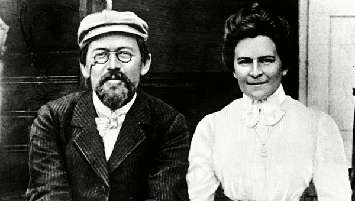

Борис Акунин
Мой календарь
Сегодня день памяти Ольги Книппер-Чеховой, которая всем нам интересна только тем, что была женой великого писателя, иначе про нее давным-давно забыли бы. Актриса она, судя по сохранившимся записям, была не выдающаяся.
Но Ольга Леонардовна прожила на свете девяносто лет, а замужем за Чеховым пробыла всего три года. Он - важная, яркая, но короткая глава в ее длинной жизни. В многоактной пьесе «Ольга Леонардовна» Антон Павлович - не более, чем звезда эпизода.
«Тот, кто любит, должен разделять участь того, кого он любит», - говорит булгаковский Воланд, но судьба прототипа Маргариты эту красивую максиму не подтверждает. Впрочем Воланд говорил про собаку прокуратора, а человек - не собака, и у каждого из любящих своя собственная карма.
Сколько их было, жен, которые пережили своих гениальных или просто талантливых спутников на много-много лет!
Марина Малич, жена Даниила Хармса (семь лет замужества из девяноста лет жизни). Елена Сергеевна Булгакова (девять из семидесяти семи). Антонина Пирожкова, жена Исаака Бабеля (пять лет из ста одного года). Список можно продолжить, он получится длинным, особенно в российский «век железный».
Одну такую даму я когда-то видел. Я начинал работать в журнале «Иностранная литература». Консультантом моего отдела по итальянской литературе была Цецилия Исааковна Кин, вдова пусть не великого, но очень талантливого писателя Виктора Кина. (Может быть, он стал бы и великим, если б его не расстреляли молодым, в тридцать восьмом).
И вот жду я в кабинете живую историю литературы, волнуюсь. Входит маленькая-премаленькая старушка 1905 года рождения. Самую яркую главу ее жизни НКВД оборвало еще полвека назад. Старушка с кем-то там, за дверью, недоругалась и, картавя, говорит вместо «здравствуйте»:
- Будут они мне ‘ассказывать! Что я им, п’иготовишка?
И на меня вдруг повеяло давно сгинувшей эпохой, в которой существовали «приготовишки», ученицы приготовительного класса гимназии, и всё это было живое, настоящее, оно никуда не сгинуло…
Давайте сегодня помянем добрым словом женщин, которых любили дорогие нам писатели. Особенно, если их любовь получилась недолгой.
Вы ведь уже догадались, к чему я веду и за что сегодня нужно будет поднять бокал.
За то, чтобы долго и счастливо, а потом в один день. Так оно правильней.